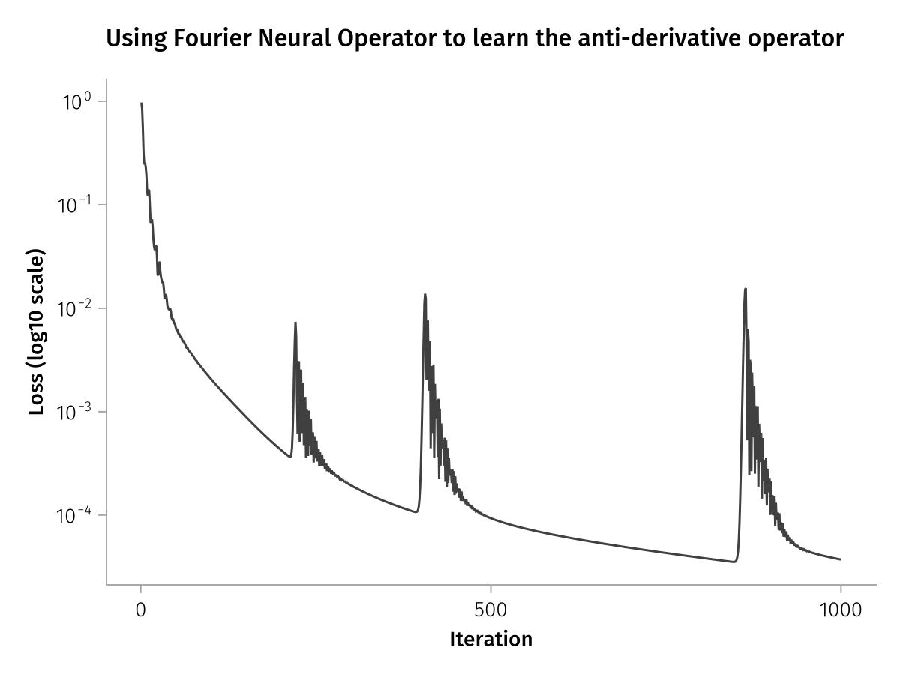
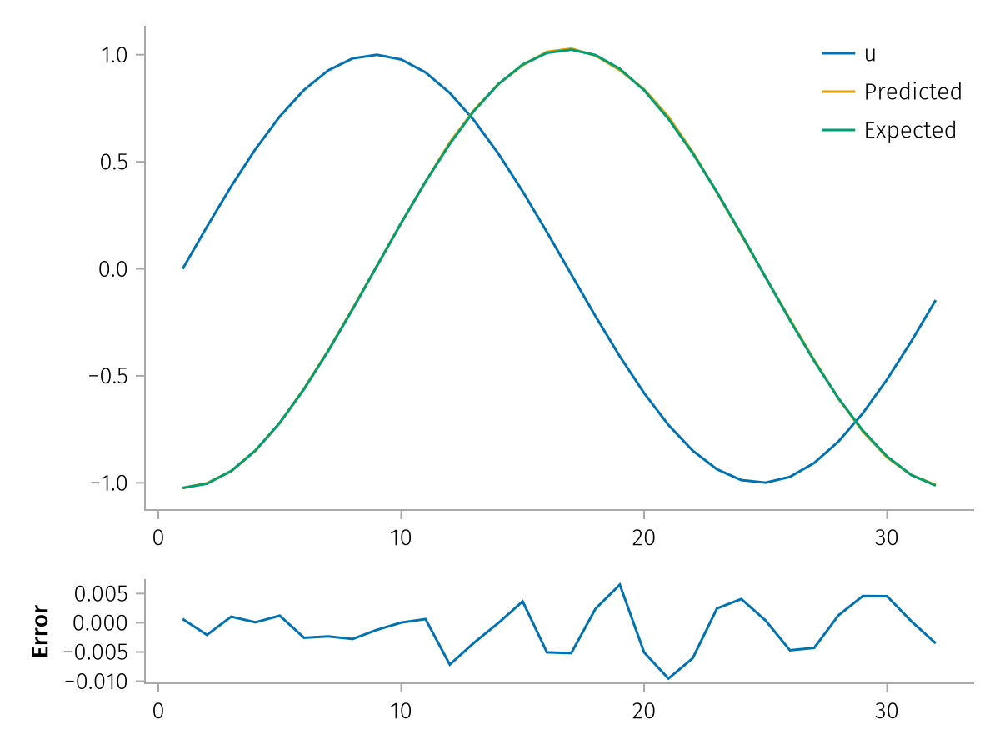

Fourier Neural Operators (FNOs)
FNOs are a subclass of Neural Operators that learn the learn the kernel $\Kappa_{\theta}$, parameterized on $\theta$ between function spaces:
\[(\Kappa_{\theta}u)(x) = \int_D \kappa_{\theta}(a(x), a(y), x, y) dy \quad \forall x \in D\]
The kernel makes up a block $v_t(x)$ which passes the information to the next block as:
\[v^{(t+1)}(x) = \sigma((W^{(t)}v^{(t)} + \Kappa^{(t)}v^{(t)})(x))\]
FNOs choose a specific kernel $\kappa(x,y) = \kappa(x-y)$, converting the kernel into a convolution operation, which can be efficiently computed in the fourier domain.
\[\begin{align*} (\Kappa_{\theta}u)(x) &= \int_D \kappa_{\theta}(x - y) dy \quad \forall x \in D\\ &= \mathcal{F}^{-1}(\mathcal{F}(\kappa_{\theta}) \mathcal{F}(u))(x) \quad \forall x \in D \end{align*}\]
where $\mathcal{F}$ denotes the fourier transform. Usually, not all the modes in the frequency domain are used with the higher modes often being truncated.
Usage
Let's try to learn the anti-derivative operator for
\[u(x) = sin(\alpha x)\]
That is, we want to learn
\[\mathcal{G} : u \rightarrow v \\\]
such that
\[v(x) = \frac{du}{dx} \quad \forall \; x \in [0, 2\pi], \; \alpha \in [0.5, 1]\]
Copy-pastable code
Click here to see copy-pastable code for this example!
using NeuralOperators, Lux, Random, Optimisers, Reactant
using CairoMakie, AlgebraOfGraphics
set_aog_theme!()
const AoG = AlgebraOfGraphics
rng = Random.default_rng()
Random.seed!(rng, 1234)
xdev = reactant_device()
batch_size = 128
m = 32
xrange = range(0, 2π; length=m) .|> Float32;
u_data = zeros(Float32, m, 1, batch_size);
α = 0.5f0 .+ 0.5f0 .* rand(Float32, batch_size);
v_data = zeros(Float32, m, 1, batch_size);
for i in 1:batch_size
u_data[:, 1, i] .= sin.(α[i] .* xrange)
v_data[:, 1, i] .= -inv(α[i]) .* cos.(α[i] .* xrange)
end
fno = FourierNeuralOperator(gelu; chs=(1, 64, 64, 128, 1), modes=(16,))
ps, st = Lux.setup(rng, fno) |> xdev;
u_data = u_data |> xdev;
v_data = v_data |> xdev;
data = [(u_data, v_data)];
function train!(model, ps, st, data; epochs=10)
losses = []
tstate = Training.TrainState(model, ps, st, Adam(0.003f0))
for _ in 1:epochs, (x, y) in data
(_, loss, _, tstate) = Training.single_train_step!(
AutoEnzyme(), MSELoss(), (x, y), tstate; return_gradients=Val(false)
)
push!(losses, Float32(loss))
end
return losses
end
losses = train!(fno, ps, st, data; epochs=1000)
draw(
AoG.data((; losses, iteration=1:length(losses))) *
mapping(:iteration => "Iteration", :losses => "Loss (log10 scale)") *
visual(Lines);
axis=(; yscale=log10),
figure=(; title="Using Fourier Neural Operator to learn the anti-derivative operator")
)
using NeuralOperators, Lux, Random, Optimisers, ReactantWe will use Reactant.jl to accelerate the training process.
xdev = reactant_device()(::MLDataDevices.ReactantDevice{Missing, Missing, Missing, Missing, Union{}}) (generic function with 1 method)Constructing training data
First, we construct our training data.
rng = Random.default_rng()Random.TaskLocalRNG()batch_size is the number of observations.
batch_size = 128128m is the length of a single observation, you can also interpret this as the size of the grid we're evaluating our function on.
m = 3232We instantiate the domain that the function operates on as a range from 0 to 2π, whose length is the grid size.
xrange = range(0, 2π; length=m) .|> Float32;Each value in the array here, α, will be the multiplicative factor on the input to the sine function.
α = 0.5f0 .+ 0.5f0 .* rand(Float32, batch_size);Now, we create our data arrays. We are storing all of the training data in a single array, in order to batch process them more efficiently.
u_data = zeros(Float32, m, 1, batch_size);
v_data = zeros(Float32, m, 1, batch_size);and fill the data arrays with values. Here, u_data is
for i in 1:batch_size
u_data[:, 1, i] .= sin.(α[i] .* xrange)
v_data[:, 1, i] .= -inv(α[i]) .* cos.(α[i] .* xrange)
endCreating the model
Finally, we get to the model itself. We instantiate a FourierNeuralOperator and provide it several parameters.
The first argument is the "activation function" for each neuron.
The keyword arguments are:
chsis a tuple, representing the layer sizes for each layer.modesis a 1-tuple, where the number represents the number of Fourier modes that are preserved, and the size of the tuple represents the number of dimensions.
fno = FourierNeuralOperator(
gelu; # activation function
chs=(1, 64, 64, 128, 1), # channel weights
modes=(16,), # number of Fourier modes to retain
)FourierNeuralOperator(
model = Chain(
layer_1 = Conv((1,), 1 => 64), # 128 parameters
layer_2 = Chain(
layer_1 = OperatorKernel(
layer = Parallel(
connection = Fix1(add_act, gelu_tanh),
layer_1 = Conv((1,), 64 => 64, use_bias=false), # 4_096 parameters
layer_2 = Chain(
stabilizer = WrappedFunction(Base.Broadcast.BroadcastFunction(identity)),
conv_layer = OperatorConv(64 => 64, FourierTransform{ComplexF32}((16,), shift=false)), # 65_536 parameters
),
),
),
),
layer_3 = Chain(
layer_1 = Conv((1,), 64 => 128, gelu_tanh), # 8_320 parameters
layer_2 = Conv((1,), 128 => 1), # 129 parameters
),
),
) # Total: 78_209 parameters,
# plus 0 states.Now, we set up the model. This function returns two things, a set of parameters and a set of states. Since the operator is "stateless", the states are empty and will remain so. The parameters are the weights of the neural network, and we will be modifying them in the training loop.
ps, st = Lux.setup(rng, fno) |> xdev;We construct data as a vector of tuples (input, output). These are pre-batched, but for example if we had a lot of training data, we could dynamically load it, or create multiple batches.
u_data = u_data |> xdev;
v_data = v_data |> xdev;
data = [(u_data, v_data)];Training the model
Now, we create a function to train the model. An "epoch" is basically a run over all input data, and the more epochs we have, the better the neural network gets!
function train!(model, ps, st, data; epochs=10)
# The `losses` array is used only for visualization,
# you don't actually need it to train.
losses = []
# Initialize a training state and an optimizer (Adam, in this case).
tstate = Training.TrainState(model, ps, st, Adam(0.003f0))
# Loop over epochs, then loop over each batch of training data, and step into the
# training:
for _ in 1:epochs
for (x, y) in data
(_, loss, _, tstate) = Training.single_train_step!(
AutoEnzyme(), MSELoss(), (x, y), tstate; return_gradients=Val(false)
)
push!(losses, Float32(loss))
end
end
return losses, tstate.parameters, tstate.states
endtrain! (generic function with 1 method)Now we train our model!
losses, ps, st = @time train!(fno, ps, st, data; epochs=500)(Any[1.1863606f0, 0.9019933f0, 0.6006621f0, 0.36505896f0, 0.2606368f0, 0.26032758f0, 0.31047314f0, 0.28200972f0, 0.1930014f0, 0.13651428f0 … 5.1001996f-5, 5.0781066f-5, 5.056125f-5, 5.034332f-5, 5.012691f-5, 4.9912316f-5, 4.96991f-5, 4.9487215f-5, 4.9276627f-5, 4.906758f-5], (layer_1 = (weight = Reactant.ConcretePJRTArray{Float32, 3, 1}(Float32[-1.2876362;;; 1.7086712;;; -0.3595577;;; … ;;; -1.2049296;;; -1.0221943;;; 0.8137092]), bias = Reactant.ConcretePJRTArray{Float32, 1, 1}(Float32[0.3958746, -0.3062053, -0.18608935, -0.075848915, 0.5235741, -0.5599644, 0.7418013, -0.081308275, -0.29471883, 0.868388 … 0.39484227, -0.78664666, -0.9742673, -0.26519, 0.31292734, 0.32174316, 0.32840976, -0.033520173, -0.3251122, 0.04996606])), layer_2 = (layer_1 = (layer_1 = (weight = Reactant.ConcretePJRTArray{Float32, 3, 1}(Float32[-0.024900278 -0.15324597 … -0.09832435 0.07632095;;; 0.0917615 0.01840503 … -0.10282968 0.06922119;;; -0.1943432 0.052332267 … -0.17525367 0.05246884;;; … ;;; -0.20781043 0.18051375 … 0.024950877 -0.13197033;;; -0.14637493 0.14804779 … -0.19776098 0.10523512;;; -0.07222597 -0.11584645 … -0.10981102 -0.07348039]),), layer_2 = (stabilizer = NamedTuple(), conv_layer = (weight = Reactant.ConcretePJRTArray{ComplexF32, 3, 1}(ComplexF32[0.054909315f0 - 2.2461968f-6im -0.03375185f0 + 3.9314837f-6im … 0.006258815f0 - 5.0248073f-6im -0.012218267f0 - 8.790133f-6im; -0.048208095f0 - 4.201771f-6im 0.06226591f0 + 8.85416f-6im … -0.0183883f0 + 3.1175741f-6im 0.03787834f0 - 1.2627846f-5im; … ; 0.016735688f0 - 3.8321145f-6im -0.009505632f0 + 2.9349221f-6im … -0.0005654419f0 + 1.1307859f-5im -0.001832486f0 + 1.0262595f-5im; 0.013020798f0 - 1.1186244f-6im -0.028998146f0 + 9.711581f-6im … 0.005902552f0 + 1.9133972f-6im -0.010714225f0 - 5.2746245f-6im;;; -0.010689114f0 + 0.025039986f0im 0.010667016f0 - 0.025017051f0im … -0.010704654f0 + 0.02503521f0im 0.010661877f0 - 0.02503472f0im; 0.002829505f0 + 0.015016833f0im -0.0028965273f0 - 0.015013464f0im … 0.0028949988f0 + 0.015014979f0im -0.0029126746f0 - 0.0150024835f0im; … ; 0.0054817824f0 - 0.021782752f0im -0.0054571964f0 + 0.021841615f0im … 0.0054461397f0 - 0.021860145f0im -0.0054841926f0 + 0.021799102f0im; -0.001137812f0 - 0.01767109f0im 0.001203989f0 + 0.017655434f0im … -0.0011754988f0 - 0.017637765f0im 0.0011832283f0 + 0.017649082f0im;;; 0.0337365f0 + 0.011473762f0im -0.033672575f0 - 0.011424824f0im … 0.03365707f0 + 0.0114357965f0im -0.03368875f0 - 0.011468299f0im; 0.005946769f0 + 0.04084776f0im -0.0059893555f0 - 0.040863786f0im … 0.006019825f0 + 0.04087748f0im -0.005979221f0 - 0.040863078f0im; … ; 0.0061717443f0 - 0.044394657f0im -0.006101096f0 + 0.044386633f0im … 0.006105706f0 - 0.04442551f0im -0.0060983202f0 + 0.044405133f0im; -0.010112341f0 - 0.029251592f0im 0.010112385f0 + 0.029226214f0im … -0.010154283f0 - 0.029289935f0im 0.010117447f0 + 0.029243395f0im;;; … ;;; 0.08730474f0 - 0.009290222f0im -0.08729869f0 + 0.009339074f0im … 0.08718203f0 - 0.009308153f0im -0.08718016f0 + 0.009343836f0im; 0.13205102f0 + 0.0011569408f0im -0.13183808f0 - 0.0011514935f0im … 0.13182557f0 + 0.001136644f0im -0.13192308f0 - 0.0011481048f0im; … ; -0.09707396f0 - 0.031811047f0im 0.09707631f0 + 0.03178084f0im … -0.09702042f0 - 0.031678207f0im 0.0969986f0 + 0.03176049f0im; -0.076030456f0 + 0.0047747847f0im 0.0758632f0 - 0.004746141f0im … -0.07592985f0 + 0.004740273f0im 0.07593271f0 - 0.0047604125f0im;;; -0.024524776f0 - 0.07963223f0im 0.024538334f0 + 0.07959674f0im … -0.024504753f0 - 0.07945596f0im 0.024586348f0 + 0.07955328f0im; 0.1392734f0 - 0.008852489f0im -0.13906978f0 + 0.008821107f0im … 0.13905372f0 - 0.008830781f0im -0.13916637f0 + 0.008836852f0im; … ; -0.083936825f0 - 0.021939052f0im 0.08396938f0 + 0.021913366f0im … -0.08399627f0 - 0.021922505f0im 0.08391909f0 + 0.02189501f0im; -0.07855882f0 + 0.014049653f0im 0.07839693f0 - 0.014023878f0im … -0.07846759f0 + 0.014045431f0im 0.07842099f0 - 0.014032739f0im;;; -0.0624881f0 + 0.14147075f0im 0.06241799f0 - 0.14141983f0im … -0.062265515f0 + 0.14121287f0im 0.062410347f0 - 0.14134343f0im; 0.13658956f0 - 0.07401051f0im -0.13645f0 + 0.0739399f0im … 0.13636966f0 - 0.07390455f0im -0.13653386f0 + 0.07398241f0im; … ; -0.10256783f0 + 0.031357188f0im 0.102559f0 - 0.0313662f0im … -0.10252207f0 + 0.031341936f0im 0.10248725f0 - 0.031369958f0im; -0.08027129f0 + 0.023468288f0im 0.080112174f0 - 0.023416694f0im … -0.08019341f0 + 0.023453053f0im 0.08015221f0 - 0.023421833f0im]),))),), layer_3 = (layer_1 = (weight = Reactant.ConcretePJRTArray{Float32, 3, 1}(Float32[-0.2115372 -0.042367917 … 0.1351429 -0.07866994;;; -0.16031246 -0.21753496 … 0.082912266 -0.01943479;;; 0.0070459954 -0.05866073 … 0.13924658 -0.06993671;;; … ;;; 0.083137736 -0.1974857 … 0.10614786 0.20671153;;; 0.0122146495 -0.08172079 … -0.15697093 0.0396413;;; 0.08465185 -0.056060985 … 0.14950332 0.10429289]), bias = Reactant.ConcretePJRTArray{Float32, 1, 1}(Float32[-0.10832615, -0.10931153, -0.091236345, -0.039137613, 0.072188474, 0.012961556, -0.08505428, 0.035795294, -0.0100530125, -0.06011212 … 0.1107085, -0.08643027, -0.09359566, -0.03241634, -0.08727142, -0.025376527, -0.0542042, 0.087244034, -0.067039125, -0.010608081])), layer_2 = (weight = Reactant.ConcretePJRTArray{Float32, 3, 1}(Float32[0.15167694 -0.09526161 … -0.10033571 -0.11918898;;;]), bias = Reactant.ConcretePJRTArray{Float32, 1, 1}(Float32[0.039585173])))), (layer_1 = NamedTuple(), layer_2 = (layer_1 = (layer_1 = NamedTuple(), layer_2 = (stabilizer = NamedTuple(), conv_layer = NamedTuple())),), layer_3 = (layer_1 = NamedTuple(), layer_2 = NamedTuple())))Applying the model
Let's try to actually apply this model using some input data.
input_data = u_data[:, 1, 1]32-element Reactant.ConcretePJRTArray{Float32,1}:
0.0
0.19665995
0.38563907
0.5595565
0.71161956
0.8358893
0.9275121
0.98290956
0.99991804
0.9778732
⋮
-0.98730135
-0.9992622
-0.9721955
-0.9071582
-0.8066904
-0.67471606
-0.51639
-0.33789518
-0.14620335This is our input data. It's currently one-dimensional, but our neural network expects input in batched form, so we simply reshape it (a no-cost operation) to a 3d array with singleton dimensions.
reshaped_input = reshape(input_data, length(input_data), 1, 1)32×1×1 reshape(::Reactant.ConcretePJRTArray{Float32,1}, 32, 1, 1) with eltype Float32:
[:, :, 1] =
0.0
0.19665995
0.38563907
0.5595565
0.71161956
0.8358893
0.9275121
0.98290956
0.99991804
0.9778732
⋮
-0.98730135
-0.9992622
-0.9721955
-0.9071582
-0.8066904
-0.67471606
-0.51639
-0.33789518
-0.14620335Now we can pass this to Lux.apply (@jit is used to run the function with Reactant.jl):
output_data, st = @jit Lux.apply(fno, reshaped_input, ps, st)(Reactant.ConcretePJRTArray{Float32, 3, 1}(Float32[-1.0245557; -1.0018349; … ; -0.96393615; -1.0093875;;;]), (layer_1 = NamedTuple(), layer_2 = (layer_1 = (layer_1 = NamedTuple(), layer_2 = (stabilizer = NamedTuple(), conv_layer = NamedTuple())),), layer_3 = (layer_1 = NamedTuple(), layer_2 = NamedTuple())))and plot it:
using CairoMakie, AlgebraOfGraphics
const AoG = AlgebraOfGraphics
AoG.set_aog_theme!()
f, a, p = lines(dropdims(Array(reshaped_input); dims=(2, 3)); label="u")
lines!(a, dropdims(Array(output_data); dims=(2, 3)); label="Predicted")
lines!(a, Array(v_data)[:, 1, 1]; label="Expected")
axislegend(a)
# Compute the absolute error and plot that too,
# on a separate axis.
absolute_error = Array(v_data)[:, 1, 1] .- dropdims(Array(output_data); dims=(2, 3))
a2, p2 = lines(f[2, 1], absolute_error; axis=(; ylabel="Error"))
rowsize!(f.layout, 2, Aspect(1, 1 / 8))
linkxaxes!(a, a2)
f